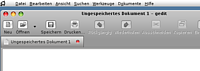
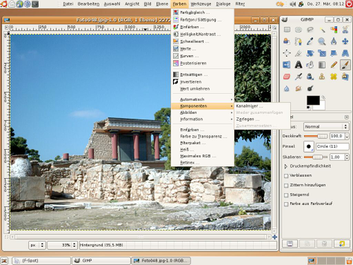

GNOME Globalmenu 0.4
Dieser Artikel wurde für die folgenden Ubuntu-Versionen getestet:
Dieser Artikel ist mit keiner aktuell unterstützten Ubuntu-Version getestet! Bitte diesen Artikel testen und das getestet-Tag entsprechend anpassen.
Zum Verständnis dieses Artikels sind folgende Seiten hilfreich:
Achtung!
Bei diesen Paketen handelt es sich um gepatchte GTK-Bibliotheken, die weder von Ubuntu noch von den Entwicklern der Original-Pakete unterstützt werden. Es kann daher nicht ausgeschlossen werden, dass es nach der Installation zu unerwartetem Systemverhalten kommt.
Global Menu ist ein Panel-Applet für GNOME, das - ähnlich wie in MacOS X - das Menü der jeweils aktiven Anwendung aufnimmt. Das Menü erscheint dann nicht mehr im Programmfenster, sondern an der entsprechenden Stelle im Panel (s. Bildschirmfoto).

Dadurch steht in der Anwendung mehr Platz zum Anzeigen der Inhalte zur Verfügung.
Hinweis:
Die Verlegung des Anwendungsmenüs in das Panel funktioniert nur mit GNOME- bzw. GTK-Anwendungen. Programme wie Firefox, Thunderbird oder Openoffice.org zeigen auch weiterhin ihr Menü im Anwendungsfenster an.
Dieser Artikel basiert im Wesentlichen auf einer Anleitung  von fengshenx bei Google-Code.
von fengshenx bei Google-Code.
Installation¶
Die benötigten Binärpakete für Gutsy stehen in den offiziellen Ubuntu-Quellen nicht zur Verfügung, können aber von der Projektseite heruntergeladen werden. Hier das Paket gnome-globalmenu-0.4.2_ubuntu-gusty-svn679.tar.gz auswählen.
Hinweis!
Fremdpakete können das System gefährden.
Das heruntergeladene Archiv kann nun in ein beliebiges Verzeichnis entpackt [1] werden. Nun sollten zunächst folgende Pakete via apt-get oder Synaptic aus den Originalquellen installiert werden, um sicherzustellen, dass alle Abhängigkeiten erfüllt sind:
libgtk2.0-0
libgtk2.0-common
libgtk2.0-dev
gtk2-engines-pixbuf
gtk2.0-examples
Jetzt wechselt man in das Verzeichnis, in dem die heruntergeladenen und entpackten Dateien liegen. Von dort aus werden nun die einzelnen .deb-Dateien installiert [2]. Am einfachsten geht das mit dem Befehl
sudo dpkg -i *.deb
Anschließend muss noch folgende Zeile in die versteckte Datei ~/.profile im Homeverzeichnis des jeweiligen Nutzers mit Hilfe eines Texteditors [3] eingetragen werden:
export GTK_MODULES=libgnomenu
Danach muss der Rechner neu gestartet werden.
Aktivieren von Global Menu¶
Nach erneutem Anmelden kann nun durch Rechtsklick auf einer freien Stelle im Panel und Auswahl von "zum Panel hinzufügen" aus dem Kontextmenü das Applet "Global Menubar" ausgewählt werden.
Wenn alles funktioniert hat, sollte es jetzt in etwa so aussehen: 
Mögliche Probleme¶
Bei selbst installierten Themes, die ein Hintergrundbild für das Panel verwenden, kann es vorkommen, dass das Menü optisch nicht zum Panel passt und wie ein Fremdkörper aussieht. Hier kann folgendes helfen:
Rechtsklick auf eine freie Stelle im Panel und im Kontextmenü "Eigenschaften" wählen. Auf "Hintergrund" gehen und das Hintergrundbild aktivieren. Anschließend das Bild ~/.themes/[Name-des-aktiven-Themes]/gtk-2.0/Panel/panel-bg.png auswählen.
Global Menu wieder entfernen¶
Um das Global Menu und die gepatchten Bibliotheken wieder aus dem System zu entfernen, geht man wie folgt vor: Das Global Menu-Applet aus dem Panel entfernen (Rechtsklick auf Menüleiste und "Remove from Panel" wählen). Anschließend öffnet man in einem Editor die Datei ~/.profile und löscht die Zeile
export GTK_MODULES=libgnomenu
bzw. kommentiert sie aus. Dann öffnet man in einem Browser diese Suchmaschine , wählt dort die installierte Ubuntu-Version aus und lädt folgende Pakete für seine Architektur herunter:
libgtk2.0-0
libgtk2.0-common
libgtk2.0-dev
gtk2-engines-pixbuf
gtk2.0-examples.
Anschließend öffnet man eine Konsole, wechselt in das Verzeichnis, in dem die heruntergeladenen Dateien liegen und gibt die nachfolgenden Befehle in genau dieser Reihenfolge ein:
sudo apt-get remove gnome2-globalmenu-applet sudo dpkg -i --force-downgrade libgtk2.0-common* sudo dpkg -i --force-downgrade libgtk2.0-0* sudo dpkg -i --force-downgrade libgtk2.0-dev* sudo dpkg -i --force-downgrade gtk2-engines-pixbuf* sudo dpkg -i --force-downgrade gtk2.0-examples* sudo apt-get update
Jetzt müsste das System wieder im Originalzustand sein.
- Erstellt mit Inyoka
-
 2004 – 2017 ubuntuusers.de • Einige Rechte vorbehalten
2004 – 2017 ubuntuusers.de • Einige Rechte vorbehalten
Lizenz • Kontakt • Datenschutz • Impressum • Serverstatus -
Serverhousing gespendet von